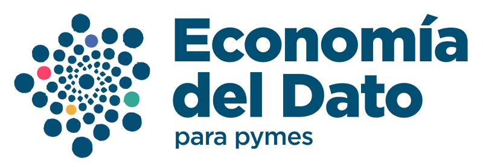

 <mat-sidenav-container class="sidenav-container" hasBackdrop="true">
    <mat-sidenav #drawer
                 class="sidenav"
                 fixedInViewport="true"
                 [attr.role]="(isHandset$ | async) ? 'dialog' : 'navigation'"
                 [mode]="(isHandset$ | async) ? 'over' : 'side'">
        <mat-toolbar class="logo-container">
            
        </mat-toolbar>
        <mat-nav-list>
            <ul class="menu-lat">
                <li *ngFor="let item of menuItems">
                    <a *ngIf="!item.Externo; else int" routerLink="{{item.Url}}" [ngClass]="{'active': Activeurl === item.Url}"  (click)="menuToggle();drawer.close()">
                        {{item.Nombre}}
                    </a>
                    <ng-template #int>
                        <a (click)="goToUrl(item.Url);drawer.close()" routerLink="{{Activeurl}}">
                            {{item.Nombre}}
                        </a>
                    </ng-template>   
                </li>
            </ul>
        </mat-nav-list>
    </mat-sidenav>
    <mat-sidenav-content>
        <mat-toolbar>
            <button type="button" class="d-md-none" aria-label="Toggle sidenav" mat-icon-button (click)="drawer.toggle()">
                <mat-icon aria-label="Side nav toggle icon" *ngIf="!drawer.opened">menu</mat-icon>
                <mat-icon aria-label="Side nav toggle icon" *ngIf="drawer.opened">close</mat-icon>
            </button>
            <span class="spacer"></span>
            
            <span class="spacer"></span>
            <ul class="menu-sup d-none d-md-flex">
                <li *ngFor="let item of menuItems">
                    <a *ngIf="!item.Externo; else ints" routerLink="{{item.Url}}" [ngClass]="{'active': Activeurl === item.Url}" (click)="menuToggle()">
                        {{item.Nombre}}
                    </a>
                    <ng-template #ints>
                        <a (click)="goToUrl(item.Url)" routerLink="{{Activeurl}}">
                            {{item.Nombre}}
                        </a>
                    </ng-template>  
                </li>
            </ul>
            <span class="spacer d-none d-md-block"></span>
        </mat-toolbar>
    </mat-sidenav-content>
</mat-sidenav-container>
